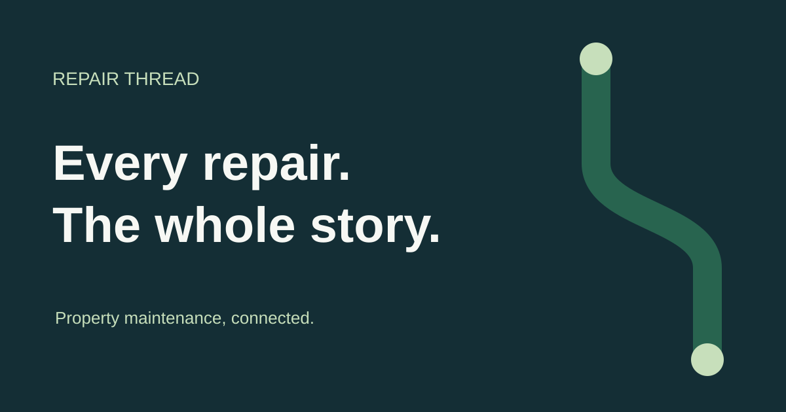

01 / Our signature
Connected from the start.
The continuous R connects two endpoints. It represents the record that stays intact as a repair moves between people.


Clear space: ¼ of the mark width. Minimum mark: 24 px. Preserve proportions. Wordmark uses system fonts; outline before commercial printing.
02 / Color with a purpose
Quiet confidence. Clear action.
Ink
#142E35
Thread green
#28644F
Sage
#E5EEE5
Paper
#F7F8F4
Ink carries information. Green signals a useful action. Sage organizes the background. Status always includes a written label.
Download software design tokens ↓03 / Typography
Every repair.
The whole story.
System sans-serif typography keeps information legible and the software quick. Bold headings, spacious body copy and aligned cost figures.
Inter, Segoe UI, Arial, sans-serifNo font downloads required. Inter is an optional font, not bundled.
04 / Our voice
05 / Ready for your software
Source assets, ready to use.

Download 1200 × 630 social artwork ↓Full usage rules ↓CSS variables ↓

SVGs are editable and resolution independent. Use the provided files directly in the web app; rasterize social artwork for channels that require PNG. This kit does not certify trademark availability.